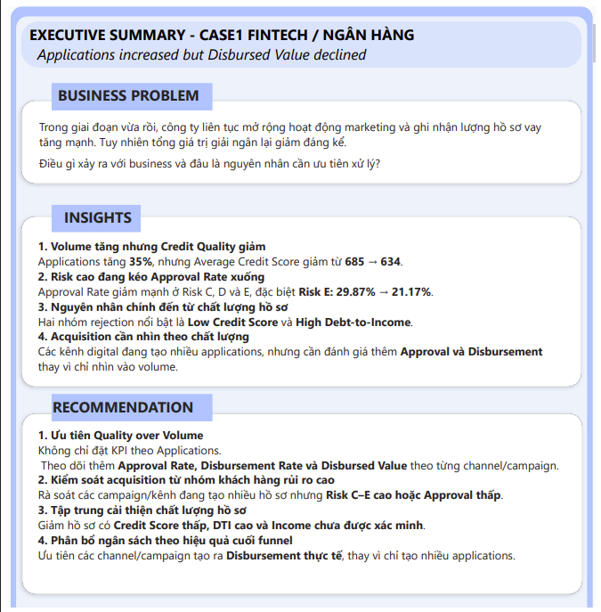

01 · FINTECH · BANKING · POWER BI
Fintech Loan Performance & Credit Quality Analysis
Why did loan applications increase while downstream loan outcomes did not improve at the same pace?
- Applications increased 35%, while Approval Rate fell from 55% → 44%.
- Disbursement Rate decreased from 87% → 81%.
- Average Credit Score declined from 685 → 634.
- Risk C–E showed stronger approval-rate deterioration; rejection analysis highlighted low credit score and high DTI as areas to investigate.
